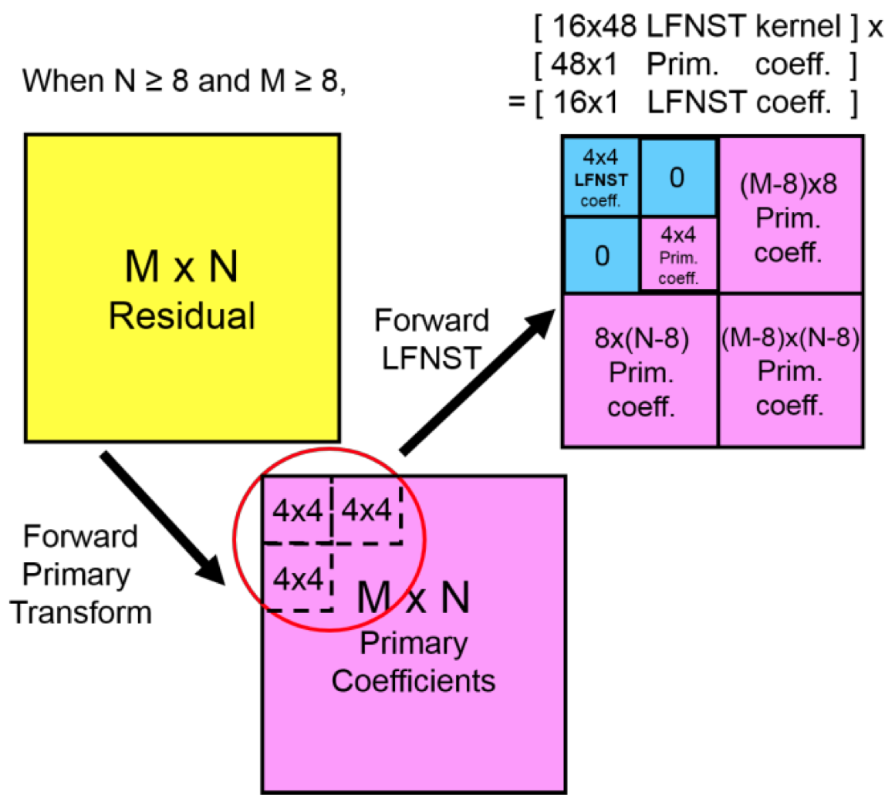
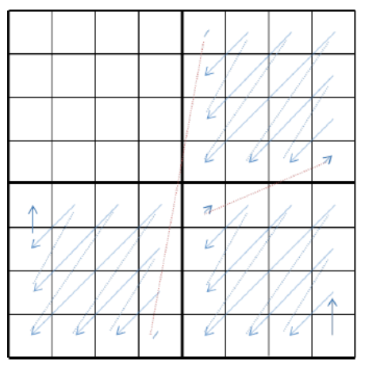
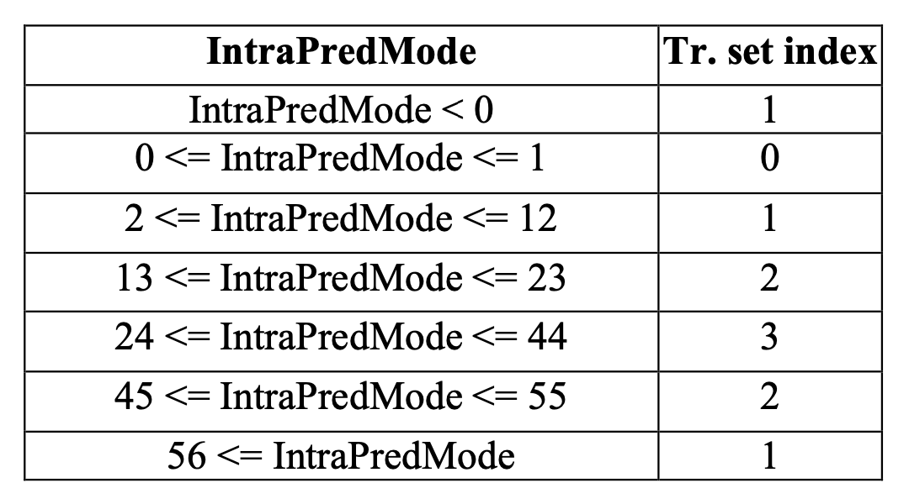

低频不可分变换（LFNST [Low-Frequency Non-Separable Transform]） 是高频凋零技术的代表，通过一个 经过离线训练 所得的不可分变换矩阵，来进一步压缩指定范围内的前一次变换结果 [32] 。我们通常将首次变换称为 一次变换（First Transform） 或 主要变换（Primary Transform） 。将以一次变换为输入的第二次变换，称为 二次变换（Secondary Transform） 。
低频不可分变换（LFNST），与 H.264 中的哈达玛变换（WHT），都属于作用于二次变换的一种处理技术。其本身复杂的部分，在于如何得到 不可分变换矩阵组（NSMG [Non-Separable Matrix Group]） 。矩阵组通过特殊的离线小模型计算所得，是一个常量矩阵组。
那么，什么是不可分变换（Non-Separable Transform）？
不可分变换与 LFNST 原理
不可分变换，被用来指代一类，无法分解为独立的行变换与列变换的组合形式表示， 只能 用单一矩阵作统一处理的变换类型。 与之相对的就是可分变换（Separable Transform）。 前文中的离散正弦变换和哈达玛变换，就属于可分变换类型。
可见，对于 可分变换 ，如果记分离后的行列变化矩阵分别为 M∣row 、 M∣col ，那么始终有：
Out=M∣row⋅In⋅M∣col
而对于 不可分变换 ，则有变换矩阵 M∣uni 使得：
Out=M∣uni⋅In
低频不可分所使用的矩阵组，就属于后一种。
如果记采用一次变换所得 M×N 大小的输出 作为 LFNST 输入。则 LFNST 需要根据技术执行前置环节中的一些求得信息（如角度预测模式、帧内预测模式）的参数值，来从矩阵组中选取满足条件的常量矩阵 T 。以 T 作为当前 LFNST 的算子参与再次变换。
算法要求，目标算子 T 矩阵的大小为 输入大小的平方 ，即有 T 取 MN×MN 尺寸。而输入 Xk 则需要以一维向量形式展开，有：
Xk=⎣⎢⎢⎡X11 ,X21 ,⋮,XM1 ,X12 ,⋯, X22 ,⋯, ⋮ ,⋯, XM2 ,⋯, X1NX2N⋮XMN⎦⎥⎥⎤M×NXk′=[X11 ,X12 ,⋯, XM1 ,⋯, XMN]MN×1T
将 Xk′ 代入标准公式，得到输出结果 X^k′ 为：
X^k′=T⋅Xk′
上式即是 低频不可分变换，被应用在二次变换时的基本公式 了。所得 X^k′ 是长度为 MN×1 的一维向量，我们需要按照 Xk→Xk′ 的逆过程，反向将其展开到 M×N 的二维区域，得到变换后的 X^k 结果矩阵。
LFNST 变换集矩阵组的获取
在说明原理中我们提到，低频不可分变换中，根据前置参数的差异，会从持有矩阵组里选择合适的算子 T 来代入运算，称之为 变换集（Transform Set） 。但因为 H.266 的专利权问题，这一传统机器学习（注意，并未使用深度学习手段）聚类分析模型的训练，所采用的基本数据集和部分过程细节，并没有完全开源。
从 LFNST 原论文中可获知的信息是，针对 不可分二次变换（NSST [Non-Separable Secondary Transform]）的变换集 ，采用的是基于 K均值（K-Means）聚类分析法 的变体算法。因此，基本训练过程属于标准的双步（2-Stages）无监督学习（Unsupervised Learning），存在两个阶段，分别是：初始阶段（Initialization）和 迭代阶段（Iteration） [33] 。当然，数据也需要分为 准备数据（Preparing Data） 和 训练数据（Training Data） ，两者皆来自未开放的黑盒数据集。
初始阶段中，主要处理准备数据，进行了两个工作：
首先，进行 特征（Feature）的选择（Selection）和提取（Extraction） 。为每一个从 编码过程（Encoding Process） 获取的 变换系数块（Transform Coefficient Block） 随机的分配一个取值范围为 label∈Z[0, 3] 的标签。并将分配好标签的变换系数块的 M×N 个低频系数，加入到 对应标签聚类（Cluster）的训练用数据集中 。 M×N 为目标输入输出的大小，例如前文采用核心为 N×N ，那么这里企图训练所得核心的参数 M=N 相等。而选出对应标签的 M×N 个输入，每个都被认为是独立的一个数据，即每个聚类有 MN 个准备数据，共 4 组 4MN 个准备数据。
其次， 选择聚类算法（Clustering Algorithm Selection） 和 约束条件设计（Constraint Design）。这里采用 K均值算法，通过利用前一步中，标签范围在 label∈Z[1, 3] 的聚类（Cluster）分配好的训练用数据集，以 奇异值分解（SVD [Singular Value Decom-position]） 等解释性较弱但快速的方法，来求解各自聚类的协方差矩阵特征向量的最佳不可分离变换矩阵（采用 SVD 所得即是奇异值矩阵）。进而获得 label∈Z[1, 3] 聚类的 质心（Centroid） ，与各数据集一起构造了算法 启动输入 。而 label=0 的聚类，则被选做为 对照组（Validation Group） ，因此该矩阵的质心被设置为单位矩阵 E=[1] ，以输入输出恒等的形式，不再参与迭代阶段的更新 。
那么约束条件是怎么设置的呢？这里采用的是，在单次训练过程后，从 3 个聚类的质心与 label=0 聚类的质心中，选取最小（或下降最明显）的 率失真优化指数（RDO [Rate-Distortion Optimization]） 作为评判标准。筛选出 4 个聚类中 RDO 最优的一个聚类，用新参与训练的对应聚类数据集，替换原有被选最优聚类的数据集，参与下一次迭代。以此，作为 K-均值聚类分析的标准约束。
随后进入迭代阶段。
迭代阶段中，主要处理训练数据，训练同样也分为两步：
首先，进行 聚类验证（Cluster Validation） 。聚类验证的过程就和一般的 K均值算法一致，将分批的训练数据交付到 4 个聚类，分别计率失真优化指数（RDO）。之后，用计算结果，按照设置的约束条件进行处理， 更新聚类标定的数据集 。
其次，完成 结果解析（Results Interpretation） 。当更新聚类当前数据集后，需要重新计算聚类的质心，方法同初始阶段一致。通过求解协方差矩阵，获取最佳不可分离变换矩阵，替代原聚类的质心。显然， label=0 聚类的质心 E=[1] 并不需要更新。
而下一次迭代是否继续，则根据是否到达模型的 最大迭代次数（该参数未提供经验值，也可根据自身训练情况自行设定），或 RDO 没有进一步降低 来决定。两者命中其一，则停止迭代训练，获取 label∈Z[1, 3] 聚类此时的质心，作为结果构成 MN×MN 尺寸的变化集：
TMN×MN∈[Cluster1 ,Cluster2 ,Cluster3 ]
一般 TMN×MN 会比较难记，通常简化为根据输入标记，写做 TM×N 简记。变换集简写为：
TM×N∈[T1∣M×N ,T2∣M×N ,T3∣M×N ]
此时的 T 即是 M×N 输入尺寸的 低频不可分变换算子（LFNST Opt） 。理论上，矩阵 T 会 保留输入源的分布形式，并将之密度梯度化 。
若输入前置主变换采用 DCT-2 型，那么二次变换的输入 Xk′ ，在经过 LFNST 变换后，算子会将低频波密度参数富集到自身靠上方的行信息中，将高频波密度参数富集到靠下方的行信息中。从而实现，变换后输出的相对训练结束时质心位置的相对均匀分布。即维持输出的高低频权重二次变换结果矩阵 X^k ，在一维展开式 X^k′ 情况下的类算子高低频分离布局，左侧低频右侧高频 。
因此，当还原输出权重矩阵 X^k′ 到 M×N 大小后，前置 DCT-2 型的低频权重仍然会位于矩阵的左上角。相应，高频则会接近右下角。这样的因素，让主变换采用 DCT-2 型，经过 LFNST 变换后的左上角首个参数值，仍可被当作直流系数（DC）。而结合 H.266/VVC 规格下的包括平面（Planar）模式、直流（DC）模式、65 种角度（Angle）预测模式在内，共计 67 种帧内预测模式本身就需要多组变化集的情况下，对于不同的主变换类型，又要单独再训练一系列变换集。处理代价会高到无法接受。
所以，目前 只将 LFNST 运用在 DCT-2 输入的情况 。
至此，在经过多次不同尺寸和模式输入下的模型训练过程后，得到了数个 M×N 取值不等的矩阵算子 [T1,⋯, Tq] 。共同组成了 LFNST 的基础变换集组 T=[T1,⋯, Tq] ，亦被称为 基础多变换集（MTS [Multiple Transform Set]） ，应对目标主变换。
LFNST 有关不可分二次变换（NSST）的化简
经过上述的推理，我们可以察觉到即便是取一个较小的尺寸，整个 LFNST 的运算也会呈指数的增加算力消耗。例如输入的 M=N=8 时，就需要一个尺寸为 64×64 大小的 LFNST 运算核。但如此大小对于计算机本身的硬件来说，会是一个 巨大的负担 。
于是，在 VTM5 有关 LFNST 工程实践的 JVET-K0099 提案中，对 LFNST 的主要应用场景，即二次不可分变换（NSST），做了算法上的调整 [34] 。利用复合基，降低计算成本。
假设当前输入尺寸为 M×N 大小，有与输入预测模式对应的尺寸为 MN×MN 的低频不可分变换算子 T 。
NSST 规定 ，对于 min(M, N)=4 的输入，统一取用 4×4 输入的算子 T 。对于 min(M, N)=8 的输入，统一取用 8×8 输入的算子 T 。那么需要保存的算子就只分为 16×16 和 64×64 大小的共计 6 个变换核，即有 T=[T4×4, T8×8] 变换集。 对于小于输入尺寸的块，补 0 到可以进行计算的大小。
而对于两类变换集，NSST 只需要分离所得的低频权重部分。因此反推算子情况，亦只需要保留所有 MTS 中的算子 T 上方一定行即可。提案中，NSST 在经过多次大批量数据的模拟实验后，确定了最终方案。
取尺寸为 RN×RN 的 NSST 低频不可分变换算子 T′ ，代替原有 MN×MN 大小算子 T 。
对于 T4×4′ 时的 4×4 输入，由于已经被划分的不可再分的量级，因而对于算子没有办法进行压缩。 4×4 相当于对输入的 再排列 ，只有右下角的最高频权重有去掉的可能。此类强制过滤的处理都是有损的，不需要做不必要的工作。
而如果强行构造 2×2 输入的算子 T2×2′ ，则会因为算子训练特性没有分离的空间，使结果反倒太过平均。因此，对于 2×2 大小的输入，无法采用 LFNST 处理 。这也阻断了我们通过选用 T2×2′ 的局部解构建复合基，等效替代更大尺寸基底，来降低变化成本的途径。
所以，此处仍选择取用原 4×4 输入对应的算子 T4×4 ，有 R=4 即：
T4×4′=T4×4
对于 T8×8′ 时的 8×8 输入，因为存在 T4×4′ 作为基础，就能够使用分离复合基的方式了。我们可以将输出的 X^k 分割为 4 个等大的 4×4 区域。以 4×4 区域为一组 复合解基 。采用经过训练的 T4×4′ 作为基底函数族，来求得 8×8 输入情况下，针对 T4×4′ 的解集，构成输出 X^k 。即期望有：
W^kX^k′′=T4×4′⋅Wk=i=1∑4(T4×4′⋅W4×4⋅Xk′)i
其中， Wk 是基于 T4×4′ 训练的 LFNST 核，它和输出 W^k 都为 4×4 大小训练 8×8 的 LFNST 基础分解基 ，训练完毕后是个 固定值 。
而 X^k′′ 则是输入 Xk′ 关于 T4×4′⋅W4×4 的变换结果。但一组选定尺寸的 LFNST 变换集，只有 3 个矩阵可作为基底。因此，变换的覆盖范围也是有限的。若将输入 8×8 大小的 Xk 也分为 4 个等大的 4×4 区域，写作如下形式：
Xk=[Xk∣4×4 ,Xk∣4×4 ,Xk∣4×4Xk∣4×4]=[Xk1 ,Xk3 ,Xk2Xk4]
那么原 X^k′′ 分离式即变为：
X^k′′=[T1∣4×4′ ,T1∣4×4′ ,T2∣4×4′ [0]4×4]⋅[Wk1 ,Wk3 ,Wk2Wk4]⋅[Xk1 ,Xk3 ,Xk2Xk4]=∑T4×4′⋅[Wk1 ,Wk3 ,Wk2[0]4×4]⋅[Xk1 ,Xk3 ,Xk2[0]4×4]
存在 Xk4 区域，乘 0 丢解的问题 ，因此 X^k′′ 与 X^k′ 的关系，还需要补充 Xk4 的 LFNST 独立解，记为 X^k4′ ，有：
T8×8−1⋅X^k′=[T1∣4×4′−1 ,T3∣4×4′−1 ,T2∣4×4′−1 [0]4×4]⋅W4×4−1⋅X^k′′+T4×4−1⋅X^k4′=[W^k1−1 ,W^k3−1 ,W^k2−1T4×4−1]⋅[X^k′′ ,[0]4×4 ,[0]4×4X^k4′]=Xk
即：
X^k′T8×8=[X^k′′ ,[0]4×4 ,[0]4×4X^k4′]=[W^k1 ,W^k3 ,W^k2T4×4]=[T4×4′⋅Wk ,T4×4′⋅Wk ,T4×4′⋅WkT4×4]
取用：
T8×8′=[T4×4′⋅Wk ,T4×4′⋅Wk ,T4×4′⋅Wk0]
那么原 8×8 输入 Xk 经过 LFNST 变换的输出 X^k′ 就有：
X^k′=(T8×8′+T4×4′)⋅Xk
而 X^k′ 的右上和左下角，皆为 [0]4×4 值。 T8×8′ 算子展开去零后，只有 16×48 的运算大小 因为固定了基底 T4×4′ 的位置，同样也只有 3 个聚类，即 3 个矩阵算子。
最终：
NSST:⎩⎪⎪⎨⎪⎪⎧TX^k′X^k′=[ T4×4′, T8×8′ ]=(T8×8′+T4×4′)⋅Xk=T4×4′⋅Xk,min(M, N)=8,min(M, N)=4
由 T4×4′ 和 T8×8′ 构造新的基础多变换集（MTS） 。结合上述变换过程，构成了 NSST 的完整理论基础。
不过，即使 NSST 已经极大的缩减了 LFNST 变换集的大小，并能在参与熵编码后，能更为有效的降低信息熵。但在以 H.265/HEVC 为目标应用时，就需要 35 组 2 类 3 算子的变换集 [34] 。延伸到 H.266/VVC 规格，则会至少需要 67 组 2 类 3 算子变换集。不论是 H.265 还是 H.266 ，都不可能采纳，属于无法工程化的技术。
那么，如何精简基础多变换集呢？
LFNST 在 H.266 应用的工程 RST 与常值 MTS
在 VTM5 的有关 JVET-N0193 提案的提交中，H.266/VVC 采用了 缩减低频不可分变换（R-LFNST [Reduced LFNST]） ，处理此问题 [33] 。因为是针对 LFNST 的 二次不可分变换（NSST）的逼近算法，R-LFNST 也被称为 缩减二次变换（RST [Reduced Secondary Transform]） [35] 。
缩减二次变换对 LFNST 的 NSST 应用所得 基础多变换集（MTS） ，进行 整体变换集算子数量 和 算子生效范围 ，两方面的裁剪。其理论根基仍来源自 NSST 。
RST 在生效范围的调整，主要集中于控制 NSST 在工程实现中的有效计算区域。根据 NSST 的基本公式可以发现，实际上对于尺寸大于 8×8 的 M×N 大小主变换 Xk 输入，NSST 能起作用的部分仅局限于左上角和与其相邻的，共计 3 个 4×4 大小的范围。
如此一来，介于参与 NSST 的输入已不可再分，对于这三个区域外的的其余 Xk 值， 根本不需要再次进行二次变换处理 。而在 T4×4′ 时和 NSST 一致。
所以，原 NSST 公式可调整为：
RST:⎩⎪⎪⎨⎪⎪⎧TX^k′X^k′=[ T4×4′, T8×8′ ]=T8×8′⋅Xk′∣48×1=T4×4′⋅Xk,min(M, N)=8,min(M, N)=4
即，对于 M×N≥8×8 的情况，就如下图所示：

图 3.5.3-1 RST 的 8x8 输入理示意图[32]
有 T8×8′ 时，只需处理图中蓝色部分的 Xk 数据。
经 T8×8′ 计算后的原输出结果 X^k′ ，安全起见会需要对非左上角部分扫描归零：

图 3.5.3-1 RST 的 8x8 输入 NSST 处理结果示意图（蓝线扫描顺序归零）[35]
之后，叠加至原主变化 Xk 位于计算范围外的部分，构成最终输出 X^k 。
经过此番调整后，单次算子计算所需要的算力消耗，较 NSST 相比就非常之小了。
而在 MTS 的算子数量方面，通过整合 K均值聚类机器学习 label∈Z[1, 3] 中，所得 率失真优化指数（RDO）较大的两个聚类的变换矩阵 ，将原有输入固定预测模式和尺寸时的 NSST 变换集，从 3 个矩阵精简到了 2 个，成为双算子形式：
TM×N∈[T1∣M×N ,T2∣M×N ]
同时，RST 对需要处理的 H.266 规格下的各类帧内预测模式进行了分类。将原本需要单独生成变换集的平面（Planar）模式、直流（DC）模式、角度（Angle）预测模式进行了拆解。把临近相似方向的角度预测模式进行了分类。之后归类于 4 个主流变换集到如下索引 [32] ：

凭借这样的处理，使得原本大于 67×2×3 个 MTS 矩阵，缩减到了 4×2×2 共计 8 个（详见【附表一】）的可接受范围。
至此，根据输入尺寸大小、预测模式所处归类、输入率失真优化指数（RDO）这 3 个参数，就能够选定具体的算子进行相关处理了。完成 RST 的工程化。
到这里，信息频域分离和部分冗余处理，就已经完成了。随后再配合传统音视频的量化和熵编码，即可完成对信息剩余存储空间冗余的压缩。此处不再赘言。